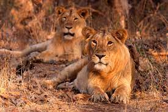
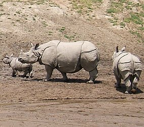
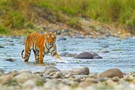
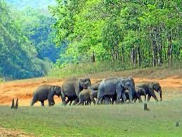

- Gir national park also known as Sasan Gir is a very significant place when we
talk about the wildlife of India.
- It is located in Gujarat and is the last remaining
habitat of the Asiatic Lions.
- There are currently 600 lions in the forests of Gir.
- The carnivores group mainly comprises the Asiatic lion, Indian leopard, jungle cat, striped hyena
, golden jackal, Bengal fox, Indian gray mongoose and ruddy mongoose, and honey badger.
- The main herbivores of Gir are chital, nilgai, sambar, four-horned antelope, chinkara and wild boar.
- There are more than 500 plant species and nearly 2400 distinct fauna species in Gir.
- The forest is an important biological research area
with considerable scientific, educational, aesthetic and recreational values.
|

- Kaziranga National Park is a national park in the state of Assam.
- It hosts two-thirds of the world's great one-horned rhinoceroses.
- According to a 2018 census, the rhino population in
Kaziranga National Park is 2,413.
- Kaziranga is home to one of the highest
density of tigers among protected areas in the world, and was declared a Tiger
Reserve in 2006.
- The park is also home to large populations of elephants, wild
water buffalo, and swamp deer.
- The park was
established as a reserve forest over a hundred years ago in 1905.
- Some historians believe, that the name Kaziranga was
derived from the Karbi word Kajir-a-rong, which means "the village of Kajir".
|

- Jim Corbett National Park is a national park in India located in Uttarakhand.
- The first national park in India, it was established in 1936 during the British Rule.
- The park was the first to come under the Project Tiger initiative.
- A total of 488 different species of plants have been recorded in the park.
- More than 586 species of resident and migratory birds have been categorised, including the
crested serpent eagle, blossom-headed parakeet and the red junglefowl.
- 33 species of reptiles, 7
species of amphibians and 7 species of fish have also been recorded.
- Other mammals include barking deer, sambar deer, hog deer, chital, sloth,
Himalayan black bears, Indian mongoose, otters, Himalayan goral, Pangolins, langur and rhesus macaques.
- Indian elephants can be seen in herds of several hundred.
|

- Periyar National Park and Wildlife Sanctuary is a protected area located in the
districts of Idukki and Pathanamthitta in Kerala.
- The park is a repository of rare,
endemic, and endangered flora and fauna.
- The park is made up of tropical
evergreen and moist deciduous forests, grasslands and stands of eucalyptus.
- There are 35 species of mammals recorded in the park.
- It is an important tiger and elephant reserve. It also houses a few white tigers.
- Other mammals include the gaur, sambar, wild pig, Indian giant
squirrel, Travancore flying squirrel, jungle cat, Dhole, sloth bear, Nilgiri tahr,
lion-tailed macaque, Nilgiri langur, Fruit bat, stripe-necked mongoose,
and Nilgiri marten.
- About 266 species of birds can be seen in the park, including
migrants.
- There are 45 species of reptiles.
|